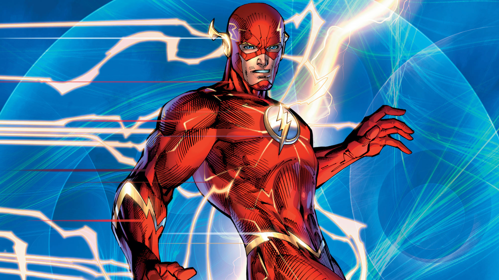
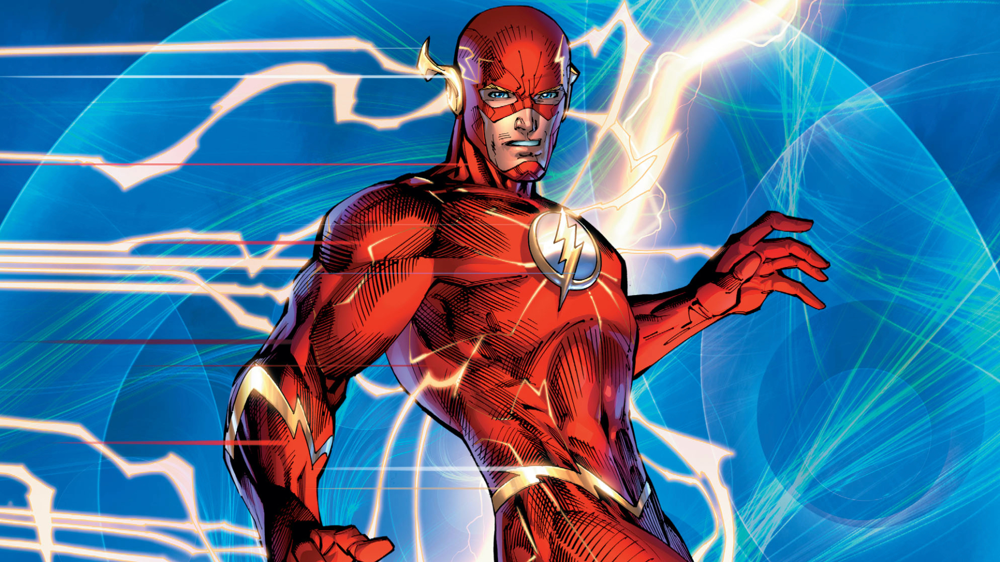

Liga da Justiça
A Liga da Justiça, também conhecida como Liga da Justiça da América (no original, Justice League of America) é uma fictícia equipe de super-heróis originada nas histórias em quadrinhos publicadas pela editora americana DC Comics.
Liga da Justiça Equipe
A equipe é um conjunto de super-heróis, geralmente formado por sete personagens, também conhecidos como os "Sete Magníficos". A escalação do time tem sofrido alterações ao longo dos anos, entre seus membros, destacam-se: Superman, Batman, Aquaman, Mulher Maravilha, Lanterna Verde, Flash e Cyborg.
Aquaman
Aquaman ou Homem-Aquático é um super-herói das histórias em quadrinhos americanas da DC Comics. Criado por Paul Norris e Mort Weisinger, o personagem estreou na revista More Fun Comics #73 (novembro de 1941, apesar de constar na capa "novembro", More Fun Comics #73 chegou às bancas dos EUA em 25 de setembro de 1941.). Inicialmente um herói secundário em títulos da antologia da DC, Aquaman depois estrelou em vários volumes como herói principal. Durante o final dos anos 1950 e 1960, período do renascimento dos super-heróis, conhecido como Era de Prata dos Quadrinhos, ele era um membro fundador da Liga da Justiça da América. Na década de 1990, a Era Moderna dos Quadrinhos, o personagem Aquaman tornou-se mais sério do que na maioria das interpretações anteriores, com enredos que descrevem o peso de seu papel como o rei da Atlântida.
Lanterna Verde
Lanterna Verde (em inglês: Green Lantern) é um nome compartilhado por diversos super-heróis da DC Comics. Criado por Martin Nodell e Bill Finger, o Lanterna Verde original estreou em All-American Comics nº16 (1940). Reformulado como um novo super-herói com o mesmo nome nos anos 60, o personagem original ficou conhecido através do nome que lhe foi chamando por seus pais de Alan Scott e por um tempo adotou a identidade de Sentinela (Brasil). Hal Jordan é o mais conhecido Lanterna Verde. Ele foi o primeiro humano induzido na Tropa dos Lanternas Verdes, e foi anunciado como possivelmente o maior Lanterna Verde de todos os tempos. Hal também é membro fundador da Liga da Justiça da América. Ele também foi conhecido como Parallax e o Espectro.
Mulher Maravilha
Mulher-Maravilha (em inglês, Wonder Woman) é uma personagem fictícia de histórias em quadrinhos publicadas pela editora estadunidense DC Comics, originalmente é uma super-heroína guerreira de origem greco-romana, alter ego da Princesa Diana de Themyscira, ilha oculta, também conhecida como Ilha Paraíso, local da civilização de amazonas (como as figuras da lenda grega-romana). Como emissária de Themyscira para o Mundo do Homem, assume o pseudônimo de Diana Prince, identidade secreta que ela adotou para se aproximar da humanidade no Universo DC. Membro honorário da Sociedade de Justiça da América, primeiro grupo de super-heróis a aparecer historicamente nas Histórias em Quadrinhos. Na Era Prata, fundadora da Liga da Justiça permanecendo até hoje.
Superman
Superman ou Super-Homem é um super-herói de histórias em quadrinhos publicadas pela DC Comics. O personagem, entretanto, desde os anos 1930, já foi adaptado para diversos outros meios, como cinema, rádio, televisão, literatura e videogame. Superman foi criado pela dupla de autores de quadrinhos Joe Shuster e Jerry Siegel. Sua primeira aparição aconteceu no verão de 1938, na revista Action Comics #1. O personagem nasceu no planeta fictício Krypton e tinha o nome de Kal-El. Foi enviado à Terra por seu pai cientista, Jor-El, momentos antes de Krypton explodir. O foguete aterrissou na cidade de Smallville (por alguns anos, foi traduzida no Brasil como Pequenópolis), onde o jovem Kal-El foi descoberto pelo casal de fazendeiros Jonathan Kent e Martha Kent. Conforme cresceu, Kal-El descobriu que tinha capacidades sobre-humanas. Quando não está com o tradicional uniforme azul e vermelho, vive com Lois Lane e Jimmy Olsen como Clark Kent, um repórter/jornalista no Planeta Diário da cidade de Metrópolis.
Batman
Batman, também conhecido pelas alcunhas Homem-Morcego, Cavaleiro das Trevas, Cruzado Encapuzado e Maior Detetive do Mundo, é uma personagem fictícia e super-herói da editora norte-americana DC Comics, criado pelo escritor Bill Finger a partir dos esboços do desenhista Bob Kane, aparecendo pela primeira vez na revista Detective Comics #27 (maio de 1939) com o nome "Bat-Man". A identidade secreta do Batman é Bruce Wayne, um bilionário americano, playboy, magnata de negócios, filantropo e dono da corporação Wayne Enterprises. Depois de testemunhar o assassinato dos seus pais enquanto criança, Wayne jurou vingança com um ideal de justiça contra os criminosos. Wayne, então, treina física e intelectualmente e cria uma persona inspirada no morcego para combater o crime. Batman opera na cidade fictícia Gotham, sendo ajudado por seu mordomo Alfred Pennyworth, o comissário de polícia Jim Gordon e diversos aliados vigilantes, sendo Robin seu parceiro mais recorrente. Ao contrário da maioria dos super-heróis, Batman não tem superpoderes; assim, na sua guerra contra o crime, utiliza seu intelecto de gênio, sua perícia em artes marciais e sua destreza física — bem como sua riqueza, que lhe garante um arsenal de última geração. Uma grande variedade de vilões compõe a galeria de inimigos do Batman, incluindo o Coringa, seu nêmesis.
Flash
"Flash" é um nome compartilhado por diversos super-heróis da DC Comics. Criado pelo escritor Gardner Fox e pelo artista Harry Lampert, o Flash original estreou em Flash Comics #1 (1940). Também chamado de Velocista Escarlate, o Flash possui velocidade e reflexos sobre-humanos e viola certas leis da física, podendo ultrapassar a velocidade da luz. Até então, quatro personagens ganharam a supervelocidade de modos diferentes e assumiram a identidade de Flash: Jay Garrick (1940-1956), Barry Allen (1956-1986, 2008-presente), Wally West (1986-2006, 2007-presente) e Bart Allen (2006-2007). Barry Allen é considerado o primeiro super-herói da Era de Prata dos Quadrinhos e permaneceu como um dos mais populares desde então. Cada versão do Flash foi um membro-chave ou da Sociedade da Justiça da América ou da Liga da Justiça, os principais grupos da DC.
Cyborg
Cyborg (Victor "Vic" Stone) é um super-herói das histórias em quadrinhos publicadas pela DC Comics. O personagem foi criado pelo escritor Marv Wolfman e pelo artista George Pérez, e fez a sua primeira aparição na DC Comics Presents #26 (outubro de 1980). Originalmente integrante dos Novos Titãs, Cyborg foi estabelecido como membro fundador da Liga da Justiça no reboot de 2011 das HQ's da DC Comics.